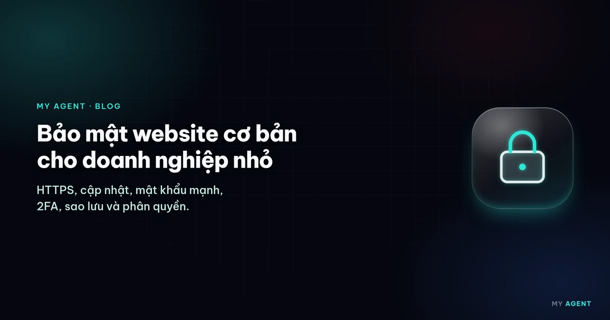
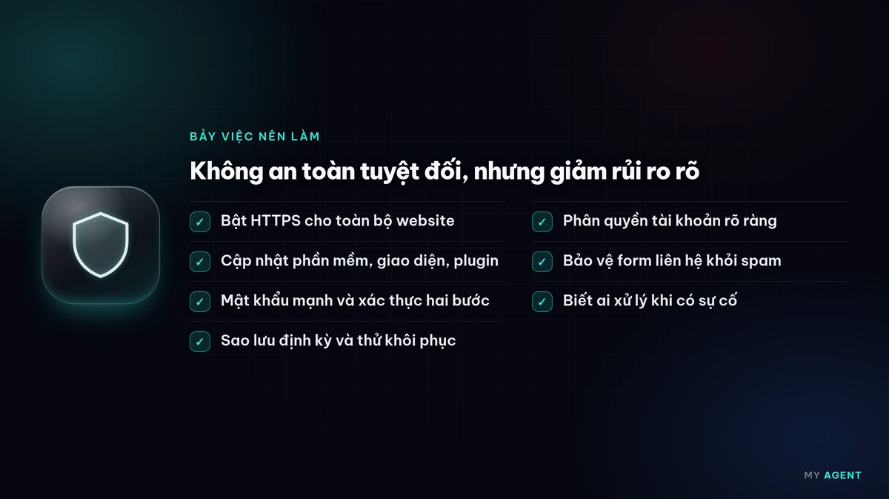
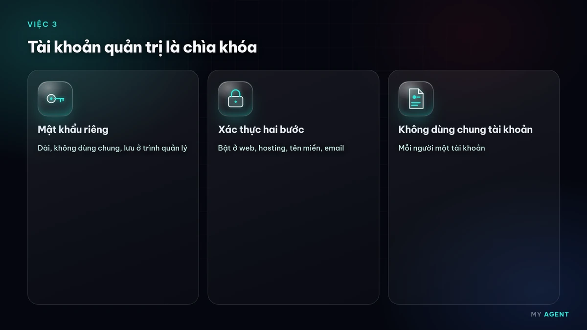
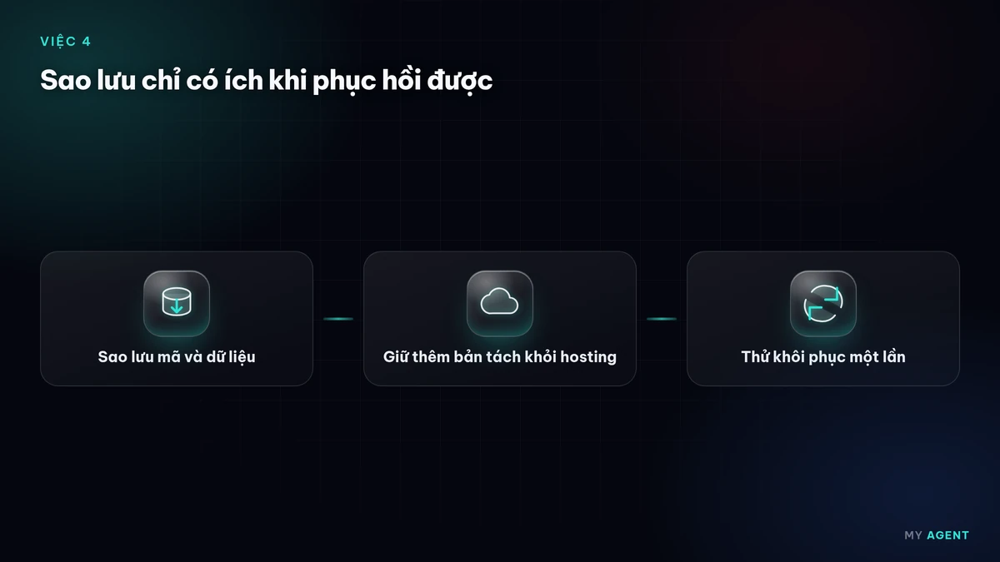

Website của doanh nghiệp nhỏ cũng có thể bị tấn công, thường không phải vì doanh nghiệp "đáng chú ý", mà vì các công cụ dò lỗi chạy tự động trên rất nhiều website cùng lúc. Không có cách nào an toàn tuyệt đối, nhưng vài việc cơ bản giúp giảm rủi ro đáng kể và giúp khôi phục nhanh khi có sự cố. Bài này gom lại 7 việc, chia ngắn để anh/chị làm dần.

Việc 1: Bật HTTPS cho toàn bộ website
HTTPS mã hóa dữ liệu giữa trình duyệt và website, nhất là thông tin khách nhập vào form. Trình duyệt phổ biến hiển thị cảnh báo "Không bảo mật" với trang HTTP, làm khách mất tin tưởng. Cần kiểm tra:
- Chứng chỉ SSL/TLS còn hạn và được gia hạn tự động (nhiều hosting hỗ trợ chứng chỉ miễn phí như Let's Encrypt).
- Mọi địa chỉ HTTP tự chuyển sang HTTPS.
Google có bài giải thích vì sao HTTPS quan trọng cho chủ website.
Việc 2: Cập nhật phần mềm, giao diện và plugin
Nhiều vụ tấn công khai thác lỗ hổng đã được vá từ trước nhưng website chưa cập nhật. Với web dùng WordPress hay phần mềm quản trị khác:
- Cập nhật lõi, giao diện (theme) và plugin khi có bản vá bảo mật.
- Gỡ hẳn plugin, giao diện không còn dùng.
- Chỉ cài từ nguồn chính thức, tránh bản "crack".
Chúng tôi có đăng tin về các bản vá, ví dụ WordPress phát hành bản vá bảo mật, để anh/chị theo dõi.
Việc 3: Mật khẩu mạnh và xác thực hai bước
Tài khoản quản trị website, hosting, tên miền và email đều là "chìa khóa". Nên:

- Dùng mật khẩu dài, riêng cho từng tài khoản, lưu trong trình quản lý mật khẩu.
- Bật xác thực hai bước (2FA/MFA) ở mọi nơi hỗ trợ.
CISA (cơ quan an ninh mạng Hoa Kỳ) khuyến nghị bật xác thực đa yếu tố để tài khoản khó bị chiếm hơn khi mật khẩu bị lộ.
Việc 4: Sao lưu định kỳ và thử khôi phục
Sao lưu là phương án cuối khi mọi thứ khác thất bại. Nên sao lưu cả mã nguồn lẫn dữ liệu, lưu ít nhất một bản ở nơi tách khỏi hosting chính, và thỉnh thoảng thử khôi phục để chắc bản sao lưu dùng được. Tần suất tùy mức độ thay đổi của website: web cập nhật thường xuyên cần sao lưu dày hơn.

Việc 5: Phân quyền tài khoản rõ ràng
- Mỗi người một tài khoản riêng, không dùng chung một tài khoản quản trị.
- Chỉ cấp quyền đủ dùng: người viết bài không cần quyền cài plugin.
- Khi nhân viên hoặc đơn vị ngoài ngừng hợp tác, khóa hoặc xóa tài khoản và đổi mật khẩu liên quan.
- Tài khoản tên miền và hosting nên đứng tên doanh nghiệp; xem thêm dịch vụ tên miền.
Việc 6: Bảo vệ form liên hệ khỏi spam
Form liên hệ, đăng ký là nơi bot hay gửi rác. Cách phổ biến: dùng CAPTCHA hoặc trường ẩn chống bot, giới hạn số lần gửi, kiểm tra dữ liệu nhập ở phía máy chủ và không hiển thị lại nội dung khách gửi khi chưa lọc. Chỉ thu thập thông tin thật sự cần, và nêu rõ trong chính sách bảo mật.
Việc 7: Theo dõi cảnh báo và biết ai xử lý khi có sự cố
- Bật thông báo đăng nhập lạ, cảnh báo website ngừng hoạt động.
- Đăng ký website với Google Search Console để nhận cảnh báo nếu Google phát hiện mã độc.
- Ghi sẵn: ai giữ tài khoản hosting, tên miền; ai liên hệ khi web bị lỗi; bản sao lưu nằm ở đâu.
Mozilla có tài liệu bảo mật website cho ai muốn tìm hiểu sâu hơn.
Bắt đầu từ đâu?
Nếu chưa làm gì, hãy ưu tiên theo thứ tự: HTTPS, 2FA cho tài khoản quan trọng, sao lưu, rồi cập nhật phần mềm. Các việc này cũng nằm trong danh sách nên có của một website chuyên nghiệp và checklist SEO cơ bản. Khi tính ngân sách, xem bài chi phí làm website phụ thuộc yếu tố nào và giá tham khảo, chưa bao gồm VAT tại bảng giá.
Nếu anh/chị cần đơn vị hỗ trợ chăm sóc website, hosting hoặc thiết kế website mới có sẵn các bước trên, có thể liên hệ My Agent; chúng tôi phản hồi trong giờ làm việc.
Câu hỏi thường gặp
Website nhỏ, ít khách thì có cần lo bảo mật không?
Có. Phần lớn tấn công chạy tự động và dò mọi website có lỗ hổng, không phân biệt lớn nhỏ. Làm các bước cơ bản giúp giảm rủi ro.
Có HTTPS là website an toàn rồi phải không?
Chưa đủ. HTTPS bảo vệ dữ liệu trên đường truyền, nhưng không thay cho việc cập nhật phần mềm, mật khẩu mạnh, xác thực hai bước và sao lưu.
Website bị hack thì nên làm gì trước?
Đổi mật khẩu các tài khoản quản trị, hosting, tên miền; liên hệ đơn vị hosting hoặc người chăm sóc web; khôi phục từ bản sao lưu sạch rồi cập nhật bản vá trước khi mở lại.
Từ khóa: bảo mật website · doanh nghiệp nhỏ · chăm sóc website · thiết kế web giá rẻ